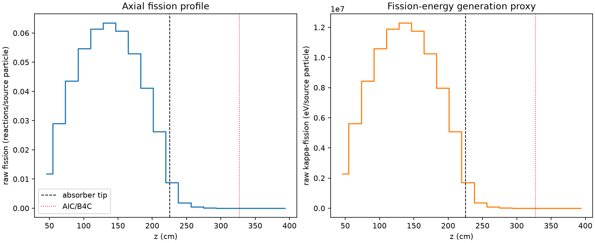
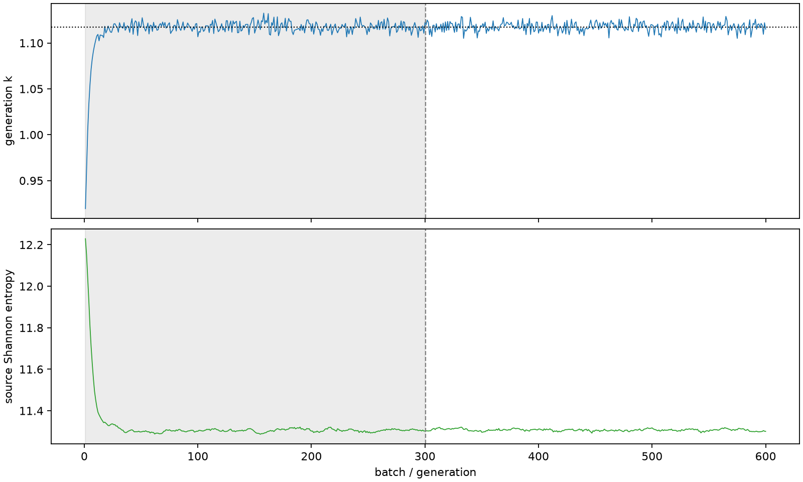

| field | value |
|---|---|
| experiment | V2-STAGE_32_OGRENCI_04-0005 |
| k | 1.1175131866123156 |
| MC standard error | 0.0001934192363643976 |
| seconds | 1350.327936537 |
| acceptance | not_assessed |
| convergence | review_required |
Completed is output integrity only; physical and statistical review required. Zero tallies do not prove zero production or zero uncertainty.
| diagnostic | value |
|---|---|
| geometric fuel voxels | 5280 |
| zero fission tally voxels | 505 |
| low signal fuel voxels | 1569 |
| low signal fission share | 0.00010011285772383664 |
| low signal kappa share | 0.00010014685930025995 |
| important fission share | 0.9500069446041409 |
| previous filter included | 3711 |
| duration estimate s | 1562.5173488400023 |
| actual minus estimate s | -212.18941230300243 |
| fission relative MC error | statistics |
|---|---|
| all_geometric_fuel | {"voxels": 5280, "positive_mean_voxels": 4775, "zero_mean_voxels": 505, "undefined_relative_error_voxels": 505, "median": 0.013600511113203375, "p95": 0.8896560200920002, "maximum": 1.0000000000000002} |
| low_signal | {"voxels": 1569, "positive_mean_voxels": 1064, "zero_mean_voxels": 505, "undefined_relative_error_voxels": 505, "median": 0.544652432398879, "p95": 1.0, "maximum": 1.0000000000000002} |
| important_95pct | {"voxels": 2382, "positive_mean_voxels": 2382, "zero_mean_voxels": 0, "undefined_relative_error_voxels": 0, "median": 0.0073197277563406445, "p95": 0.01033569810278473, "maximum": 0.015826241984576897} |
| outside_previous_filter | {"voxels": 1569, "positive_mean_voxels": 1064, "zero_mean_voxels": 505, "undefined_relative_error_voxels": 505, "median": 0.544652432398879, "p95": 1.0, "maximum": 1.0000000000000002} |
| kappa_fission relative MC error | statistics |
|---|---|
| all_geometric_fuel | {"voxels": 5280, "positive_mean_voxels": 4775, "zero_mean_voxels": 505, "undefined_relative_error_voxels": 505, "median": 0.013580808995163281, "p95": 0.8902182910729867, "maximum": 1.0000000000000002} |
| low_signal | {"voxels": 1569, "positive_mean_voxels": 1064, "zero_mean_voxels": 505, "undefined_relative_error_voxels": 505, "median": 0.54409803553416, "p95": 1.0, "maximum": 1.0000000000000002} |
| important_95pct | {"voxels": 2382, "positive_mean_voxels": 2382, "zero_mean_voxels": 0, "undefined_relative_error_voxels": 0, "median": 0.00731128244267136, "p95": 0.010323463630903322, "maximum": 0.01580774933485808} |
| outside_previous_filter | {"voxels": 1569, "positive_mean_voxels": 1064, "zero_mean_voxels": 505, "undefined_relative_error_voxels": 505, "median": 0.54409803553416, "p95": 1.0, "maximum": 1.0000000000000002} |
| axial bin | fission share | kappa-fission share |
|---|---|---|
| 1 | 0.025808854497018856 | 0.025810035206455136 |
| 2 | 0.06361861751301069 | 0.06361821478210632 |
| 3 | 0.09561603366955865 | 0.0956154232429353 |
| 4 | 0.1198768555307899 | 0.11987598668577523 |
| 5 | 0.13449580086855686 | 0.1344949745964356 |
| 6 | 0.1390086538289712 | 0.1390077746624351 |
| 7 | 0.1329922175472194 | 0.1329913941171825 |
| 8 | 0.1160787014045297 | 0.11607782915204047 |
| 9 | 0.09017290357940783 | 0.09017224993661625 |
| 10 | 0.057522186667055566 | 0.0575217909493003 |
| 11 | 0.019295787001342084 | 0.019298903653726582 |
| 12 | 0.004096711407362203 | 0.004098230420216939 |
| 13 | 0.0010440092408858703 | 0.00104438668044921 |
| 14 | 0.00026758823685968386 | 0.0002676908233587401 |
| 15 | 8.023688836232791e-05 | 8.026133570402284e-05 |
| 16 | 2.0057800348800703e-05 | 2.0064366151405117e-05 |
| 17 | 3.5590400164577447e-06 | 3.5625296244438e-06 |
| 18 | 1.0858934977284622e-06 | 1.0869140177643295e-06 |
| 19 | 1.2921462134207257e-07 | 1.295790480161778e-07 |
| 20 | 1.0170584686409931e-08 | 1.0366420805166603e-08 |
Histories include the inactive-to-active transition at batch 300. kappa-fission approximates fission energy production, not total heat deposition.

